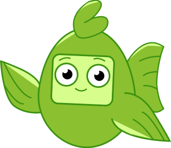
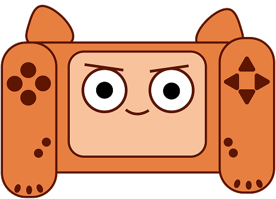
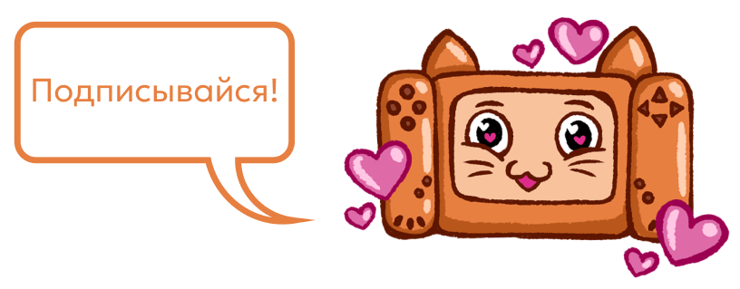
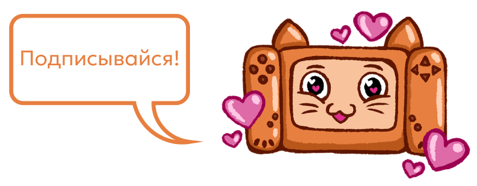

Знания – сила!
Здесь ты найдешь много полезной информации, благодаря которой ты будешь знать, как не попасться на удочку мошенников и много другое!
Полезные статьи
-

Зарядка для глаз
Здорово, что тебе нравится компьютер, ведь в Интернете столько всего интересного: мультфильмы, игры, познавательные видео и, конечно, книги! Кажется, что экран — это волшебная дверь, из которой совсем не хочется выходить.
Но давай поговорим о твоих глазах. Ведь они — настоящие супергерои! Целый день они помогают тебе видеть мир: различать цвета, читать задания, замечать друзей, играть в мяч. Когда ты смотришь в компьютер или планшет, твои глаза работают на полную мощность!
-

Не молчи о том, что происходит в интернете!
Интернет – это огромное пространство с интересными играми, картинками и новыми друзьями. Но, как и в любом незнакомом месте, там можно столкнуться с чем-то пугающим. Поэтому важно не хранить секреты о том, что происходит в сети, а делиться ими.
Почему же так важно говорить о том, что происходит в интернете? Давай разберёмся вместе!
Ещё больше интересных материалов в наших социальных сетях!
В наших социальных сетях вы найдёте много видео, клипов и постов о том, как правильно вести себя в интернет пространстве. Мы за безопасный интернет!
 Вконтакте
Вконтакте Телеграм
Телеграм 
